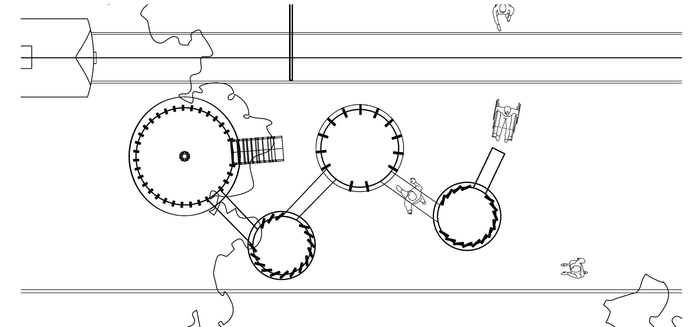
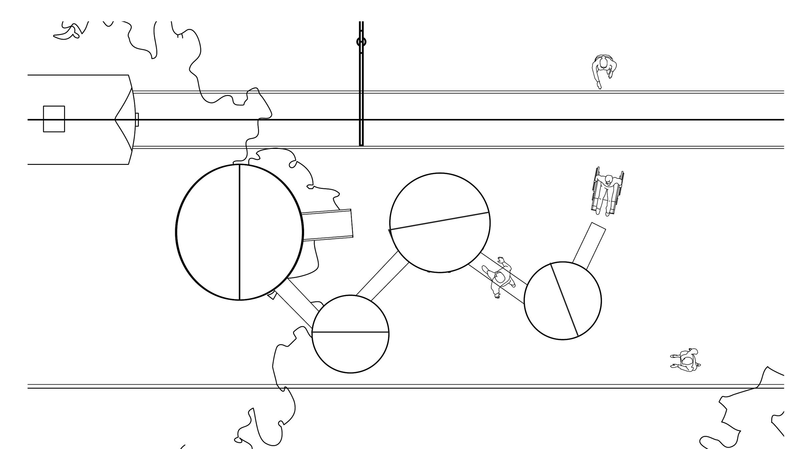
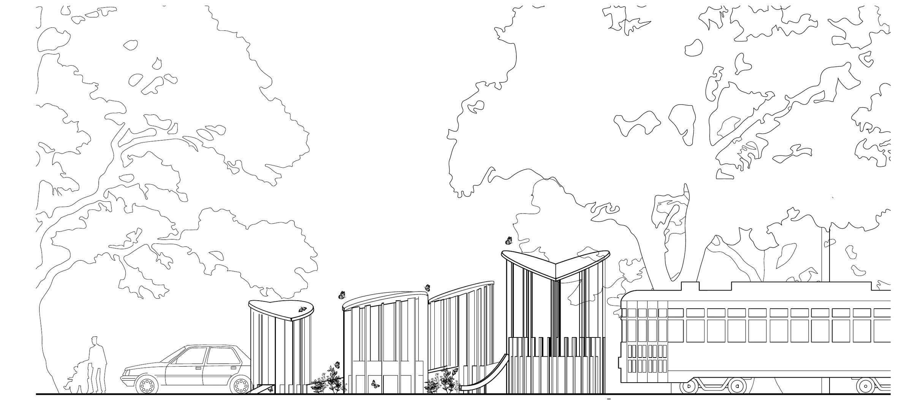
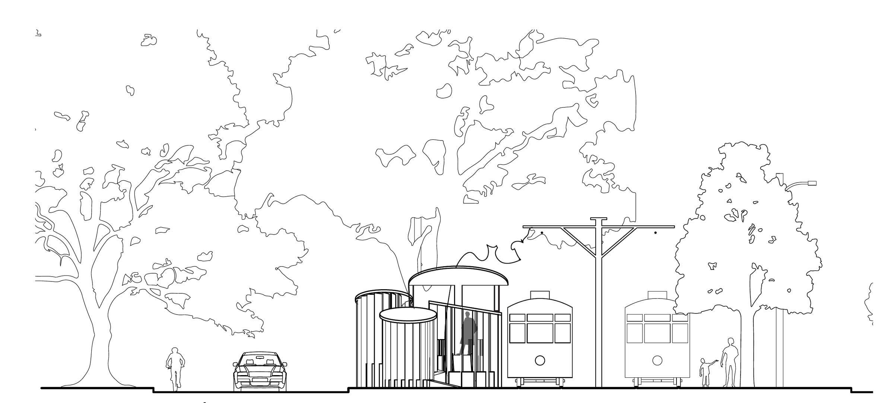
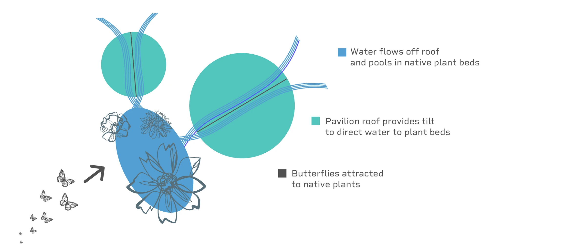

Butterfly
Streetcar Pavilion
Four connected shelters turn waiting into a sequence of spatial experiences.
- Year
- Spring 2026
- Context
- Design II Studio · DESG 3005
- Status
- Spatial design proposal
- Tools
- Rhino 3D · Adobe Suite

A lifecycle
translated into space.
The pavilion takes the butterfly lifecycle as a way to organize shelter. Four connected spaces correspond to the egg, caterpillar, chrysalis, and butterfly, changing the experience of enclosure, light, and visibility as people move through them.
The proposal creates a sequence of places to pause, sit, look out, and move between.
01 Egg
A low, compressed space emphasizes enclosure and protection.
02 Caterpillar
Vertical elements filter light and break views into fragments.
03 Chrysalis
A more inward-looking space creates a sheltered pause.
04 Butterfly
The most open, elevated space broadens the view outward.
Four spaces.
One connected route.
Circular spaces sit beside the streetcar alignment and connect through short passages. The ground plan shows the sequence at pedestrian level; the roof plan reveals the different sizes and orientations of the shelters above.




Changing height.
Changing enclosure.
The sections explain the spatial sequence through roof height, vertical screens, and elevation. One looks along the connected pavilions; the other places the shelter within the streetcar corridor and surrounding trees.




A roofline
that meets the planting.
The tilted roofs echo the motion of butterfly wings and are intended to direct rainwater toward planting beds. Proposed plants include milkweed, lantana, zinnias, and purple coneflower, chosen to connect the pavilion’s narrative with plants that attract butterflies.


From a drawn system
to an imagined place.
Rendered views explore how the proposal could feel at eye level: filtered views through vertical screens, seating within the circular spaces, and planting around the route. These are studies of the proposed experience.